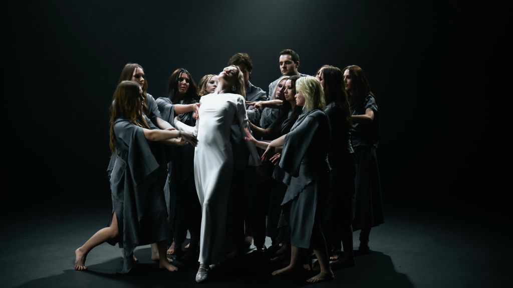

Issue #19 Features

The following features are now included in our online magazine which is also available in print.
Issue #19
Online Magazine | Print MagazineLaura Williams — Ready to Be Found
Ready to Be Found by Laura Williams is an understated album that blends elements of folk with honest stories of love and connection. A person who leads an active life of a teacher and a mother, Williams finds a way to share her ideas and observations of timing, lost connections, and coming back in the right time. The track "Coming Home" explores the concept of reconnected relationships and the idea that some people will come back when life becomes suitable. Produced in the homemade kitchen studio by Dom Navarra, the album focuses on intimacy rather than perfection. Each note of the acoustic guitar and the singer's voice receives enough room to shine. The influences of Laura Marling, Joni Mitchell, and The Staves can be heard, but not felt. The voice of Laura Williams sounds distinct and honest. This album is reflective and very human.
A.E.R.O. Flynn — Dark Ego
Dark Ego by A.E.R.O. Flynn is a cinematic release of the hip-hop genre that focuses on atmosphere and restrained performance. Unlike many songs that feature catchy hooks and quick delivery, Flynn prefers to build his story using the deep bass and vast production. The theme of Dark Ego is ambition and identity, which means that the artist discusses internal struggles that may arise from his successes. The calm performance style and the focus on the story, rather than the performance itself, support the theme of the track. In the production, one can hear midnight drives along the empty road that allows thinking out loud. There are several influences of Kid Cudi, Denzel Curry, and JID, but Flynn creates his own sound and world. Dark Ego is just a track in this story. Therefore, it is immersive and well-paced.
Andrei British — South Florida Police
South Florida Police by Andrei British is an energetic rock track that is produced as a cinematic chase sequence. The track is built on the tempo of 142 BPM. The song tells the story of moving through the night-time of South Florida from the point of view of the police officer. Although the topic of this story is the night-party culture, there is no need for any direct references. What makes the song unique is the way of movement, urgency, and decision-making under the pressure. The driving guitars and drums create continuous motion of the song, while the clean production supports its clear sound. Such storytelling technique makes the track look like it was created for Miami Vice, Bad Boys, and Baby Driver. The influences of Foo Fighters and Shinedown can be heard in the arena rock structure of the song. It means that the most distinctive trait of the song is its pace and intention.
Dali Van Gogh — Boneyard (Live)
The live version of the track "Boneyard" performed during 2024 Wicked Way Tour in the Tide & Boar Gastropub in Moncton is going to be included in the live album Roadkill. It gives listeners an opportunity to listen to the pure and energetic performance of Dali Van Gogh without any studio editing. Such unrestrained performance is one of the strongest features of the band. It is supported by the crushing guitars, drums, and rhythmic changes that make the track thick but under control. The vocals cut through the mix with their power and become both the instrument of the composition and the guide for the listener. The influences of Black Sabbath, Metallica, and Pantera are obvious, but the band develops its own identity. The presence of the audience makes the track even better. Having been nominated in Canada for the major rock awards, the band continues to rise.
The Jardani Crow Band – Her Song
On their debut song Her Song, The Jardani Crow Band presents the world an example of how sincere music should be. Being recorded collaboratively in Asheville, New Orleans, Texas, Portugal, and Malaysia, the song doesn't look like a result of many people working separately – there is a feeling of natural cohesion in the process. In the center of this composition are two central performers, Michael Wheat and Rip Kurtain, who sing emotionally, play basslines skillfully, and show much expression in their performance. Supportive musicians make the song even deeper with the help of harmonies, percussion, and guitar melodies. The influences of such artists as Wilco, The Band, and Steely Dan can be seen in the song, as it combines classic songwriting with collaboration on a global scale.
Mr William John Hope – It's Time To Play Soccer
In It's Time To Play Soccer, Mr William John Hope shows what dance anthem should be to make you feel good about it. With the help of the four-on-the-floor beat, bright synths, and catchy vocal hook, the song creates an exciting environment reminding about football match days: from entering stadiums to celebrating victories and losses. Its production is neat and clear to be used at clubs, in the gym, and at stadiums. Instead of rivalry, the song conveys joy, movement, and collective atmosphere. Some influences can be seen in the melodic structure of the song, coming from such artists as Calvin Harris, Joel Corry, and Sigala. The simplicity of the melody makes it easy to remember.
Prem Byrne – A Reflective Take on Love Beyond the Honeymoon Phase
A reflective take on love, Prem Byrne's latest song was created as a result of many changes in its lyrics, arrangements, and melody during the decade of development. Originally written more than ten years ago, the song turned from passionate declaration of love to reflection of the complexity of keeping it. There is no blaming anywhere in the lyrics, the focus of which is made on mature attitude towards love and its maintenance. In the arrangements of the song, there is the combination of acoustic guitar and electronic sound which creates a cozy mood. One of the features of the song is the bansuri flute which brings meditative character to the performance. The singer performs emotionally like Ray LaMontagne and José González do it.
HOLLYWAND – White Magic
Debut album White Magic is a unique result of a decade of creation, as it combines alternative rock, indie, garage, and classic songwriting. The songs on the album were recorded during a period of ten years, from 2014 till 2024. Such long gestation period helped the artist to develop from bassist of Róže Europy into a solo performer. The influences of such artists as The Beatles, Nirvana, and Pixies are hidden behind the sound of the album, becoming a part of its style. In the tracklist, the album shows different sides of the story – from quiet to powerful performance. There is nothing overpolished in the production of the album; all the songs have organic and human sound.
Matthew Jones - Testify: Authentic Worship Derived From Life's Challenges
Matthew Jones' Testify is an EP which came out on June 12 and is a product of sincere worship music inspired by life experience. It was made at recording sessions in Nashville and New York by A Thousand Hills Music and Old Bear Records. It is the combination of contemporary Christian music production and authentic emotions conveyed by the sound of acoustic guitars, piano, harmonies, and gospel influence. What makes the Testify unique is the fact that it is written in the context of seasons of endurance and struggle which Matthew has experienced in his life. Although he does not turn the album into his biography, his personal struggles inspire the writing of songs of faith in situations when there is no certainty of what will happen next. Singing wise, Matthew puts all his energy into the authenticity of the vocal line, leaving aside all technical aspects. He performs natural transitions from intimate reflection to powerful, congregational choruses. Thus, the success of this EP can be explained by the way the author approaches worship - not as something definite, but rather as the act of perseverance.
KATIA POJIDAEVA – Inherited Scars: Cinematic Debut About Generational Trauma
With her debut single Inherited Scars released on June 12, KATIA POJIDAEVA presents a cinematic dark alternative rock single that deals with inherited emotional scars and generational trauma. The track features themes such as family dysfunctions, cycles of psychological problems, and complicated processes of breaking the chains of generations' inherited traumas. In terms of musicality, the track works on the principles of restrain and atmosphere created by means of heavy guitars, spacious production, and slow growing tension of the track. The silence and spaciousness are used just as effectively as distortion. KATIA's vocal performance is similarly restrained and deep without any unnecessary drama. It is precise, letting the pain to grow rather than to be shown from the very beginning of the track. The stylistic range of the track falls somewhere between gothic rock, industrial textures, and alternative music influenced by cinema. Among similar artists, one can name Chelsea Wolfe, PJ Harvey, Garbage, Evanescence, and Deftones. So, KATIA's debut can be characterized as the deliberate, mature and cinematic piece of work.
The Buddyrevelles – The Conviction
With their The Conviction being the third and last EP in their Trilogy of the EPs, the Buddyrevelles finish their long artistic voyage with an excellent EP after almost twenty years of waiting. Instead of falling for nostalgia, the Wisconsin-born, Chicago-based trio perfect their unique combination of indie rock, math rock precision, and power pop melody. On the album, there is a balance created between technical skills and songwriting through the intricate guitar, dynamic rhythm changes, and vulnerable vocals of Aaron Grant. The chemistry within the band makes it possible to hear all the complexities of arrangements without losing anything of their immediacy and naturalness; the restraint is important in the production process. The Conviction tells about time, persistence, and the ideas left unfulfilled until they got fulfilled. It shows that great songs are able to mature during many years staying relevant and powerful.
Matt Law – "Made Up Construct"
Matt Law's Made Up Construct shows the vibe of the young indie rock band inspired by the friendship, intuition, and the drive to success. The band was formed thanks to the connections between the members of the Riverside Music College and Glasgow's live scene. It includes bright guitar riffs, dynamic rhythms, and lyrics that ask questions concerning the way people create meanings in their everyday lives. On the single, there is a good balance between the indie rock's accessibility and songwriting, making it possible to express philosophical ideas using upbeat melodies. Since the track was recorded with a full band, there is natural chemistry and slight imperfection of the performance adding to its authenticity. Made up Construct is the result of the influence of early 2000s guitar bands that avoid the nostalgic style and focus on immediacy and sincerity of the performance.
The Breakman Holiday Singers – "Boom Boom"
The Breakman Holiday Singers Boom Boom creates a patriotic song that tells about the atmosphere of celebration on the Independence Day in America. There are bright acoustic textures, guitar riffs, percussion, and harmonies used in order to create a song that focuses on celebrating common moments instead of political ones. In this project, Terry Breakman who is the songwriter and producer from Connecticut works with vocalists Ben Flanagan, Adam Yas, and Heidi Flanagan; due to the good chemistry between them, it sounds like a communal singalong song. The production is done using restraint in order to emphasize the importance of the lyrics telling about the moments of cookout, fireworks, and neighbors' gathering. Instead of creating a spectacular show, Boom Boom puts emphasis on describing the traditions that define the holiday. The timeless Americana style and accessible construction make it possible for the track to become a modern version of holiday song for everybody's playlist.
This dispatch was last updated on June 30, 2026